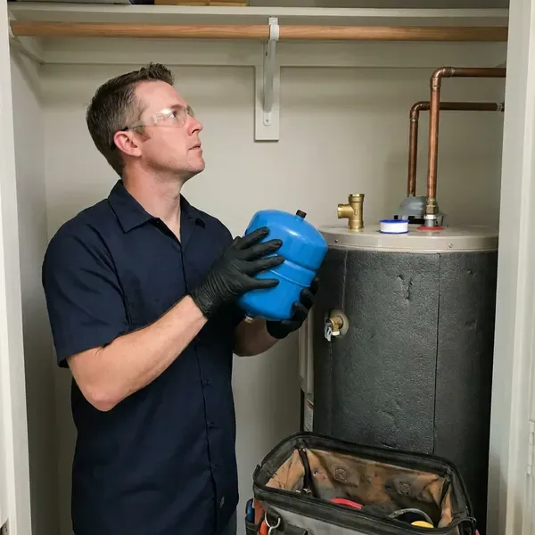

Water Heater Expansion Tank Installation in Watford City, ND
Protect your home's plumbing system with professional water heater expansion tank installation in Watford City, ND.
- Same-Day Installation Available
- Local Watford City Team
- Precharged to Your Pressure
- Code Compliant

Protect Your Tank and Fixtures With an Expansion Tank in Watford City, ND.
Our licensed plumbers are ready to install your expansion tank safely and efficiently.
Professional Water Heater Expansion Tank Installation in Watford City, ND
HPN Plumbing sees many homes with high incoming pressure and pressure regulators that create closed systems. When water heats from about 60 to 120 degrees, it expands and has nowhere to go without an expansion tank. We install the tank securely on the cold supply and confirm the system holds steady through a full heating cycle.
Our expertise includes:
- Precise expansion tank sizing and installation.
- Secure strapping and bracket support on the cold water line
- Lengthening water heater lifespan and protecting pipes.

Additional Plumbing Installation Services in Watford City, ND
We install water heaters, pumps, lines, and fixtures across Watford City, ND with precision workmanship that meets every local code.


Customers
Why Choose HPN Plumbing for Water Heater Expansion Tank Installation in Watford City, ND?
Installing a water heater expansion tank is not just about compliance, it is about protecting your entire plumbing system. Without one, thermal expansion can put serious stress on your pipes and water heater, leading to premature failure.
- Properly Supported, Tanks are strapped or bracketed so their weight never hangs on the pipe.
- Measured Pressure, We test static water pressure and set the tank precharge to match it.
- Full System Check, We inspect the PRV and relief valve while we are on site.
Citywide Coverage
HPN Plumbing proudly serves every neighborhood of Watford City, so residents across the entire area have access to our expert water heater expansion tank installation. We know the plumbing needs of homes here in Watford City.
Experienced Team
Each plumber at HPN Plumbing is committed to delivering quality workmanship and precise installation, so your water heater expansion tank works properly for years to come.
Safety-First Approach
Thermal expansion can push household pressure past 150 psi, the point where a temperature and pressure relief valve opens. A properly installed expansion tank keeps pressure in a safe range and protects the heater from stress.
Trusted Certified Watford City Plumbing Services Professionals
At HPN Plumbing, we take pride in providing licensed, certified plumbing services throughout Watford City, ND. Backed by leading industry credentials, our experienced plumbers combine technical skill with genuine customer care. Whether it is repair, installation, or maintenance, we follow strict safety and quality standards to deliver lasting results you can trust.
Call Us Now PHCC Plumbing Contractor Recognition
PHCC Plumbing Contractor Recognition Better Business Bureau (BBB) Accreditation
Better Business Bureau (BBB) Accreditation Angi Certified Pro
Angi Certified Pro ISO 9001 Quality Management Certification
ISO 9001 Quality Management CertificationReliable Water Heater Expansion Tank Installation Services in Watford City, ND
Watts Expansion Tank Installation in Watford City, ND
Watts is a leading manufacturer of high-quality plumbing products, including durable water heater expansion tanks. At HPN Plumbing, we frequently recommend and install Watts expansion tanks because of their proven reliability and performance in Watford City, ND homes. These tanks are built to meet strict industry standards and effectively manage thermal expansion, protecting your water heater and entire plumbing system. Our technicians are experienced with Watts products and make sure of proper installation.

Commercial Expansion Tank Solutions in Watford City, ND
Commercial properties in Watford City, ND often have larger water heaters and higher hot water demands, making expansion tanks even more critical. HPN Plumbing provides robust commercial expansion tank installations designed to handle the increased pressure and volume of commercial systems. We work with businesses to limit disruption during installation and follow all commercial plumbing codes, protecting your property's equipment and keeping hot water flowing for your operations.
Expansion Tank Replacement in Watford City, ND
Expansion tanks wear out over time as the internal bladder or diaphragm fails and the tank fills with water. A waterlogged tank feels heavy, and tapping it produces a dull sound all the way up instead of a hollow top. Pressing the air valve and getting water instead of air is a clear sign it has failed. We replace failed tanks with a correctly sized new unit and check the precharge before installing.
Expansion Tank Sizing for Large Water Heaters in Watford City
A standard 2 gallon tank works for many 40 and 50 gallon heaters at moderate pressure. Larger heaters, higher incoming pressure or high-capacity systems may need a 4.5 gallon tank or larger. We use manufacturer sizing charts that factor in heater volume, supply pressure and temperature setting. Correct sizing keeps the tank from over-flexing and failing early.
Expansion Tank Installation Cost Comparison in Watford City, ND
Adding an expansion tank during a water heater replacement is the most cost-effective approach because the water is already off and the piping is open. Installing one as a standalone job costs a bit more in labor but still pays for itself by protecting the heater. Larger tanks, attic installs and PRV replacement add to the total. We provide a clear price before any work starts.
Preventative Expansion Tank Maintenance in Watford City, ND
Beyond installation, regular checks and maintenance of your water heater expansion tank help it keep working effectively. HPN Plumbing offers preventive maintenance in Watford City, ND to inspect your expansion tank's air precharge, check for leaks and confirm proper mounting. This preventive approach helps identify potential issues before they lead to system failures, extending the life of both your tank and your water heater.
Tankless Water Heater Expansion Tank Integration in Watford City, ND
While tankless water heaters typically have different pressure dynamics, an expansion tank can still be beneficial or even required in certain setups or by local codes in Watford City, ND. We assess your tankless unit and plumbing configuration to determine whether an expansion tank is necessary, especially with higher flow rates or a recirculation pump. Our technicians are skilled in integrating expansion tanks cleanly with many tankless models, keeping them running efficiently and protecting your plumbing system.

Brands and Tank Materials in Watford City, ND
We install potable-rated thermal expansion tanks from brands such as Watts, Amtrol and A.O. Smith. Potable tanks use a butyl diaphragm and a lined interior so water never touches bare steel. Water in North Dakota is often very hard, with high mineral and sulfate content that leaves deposits in water heaters and fixtures. Stainless steel connections hold up against corrosion from hard or aggressive water. We avoid tanks designed only for hydronic heating, since they are not approved for drinking water.
Water Heater Expansion Tank Installation Near Me in Watford City, ND
Do not wait on protecting your plumbing system. For prompt and professional water heater expansion tank installation near me, call HPN Plumbing. We are committed to delivering high-quality workmanship and lasting solutions right here in Watford City.
If your relief valve is dripping and you are searching for expansion tank installation near me, give us a call first. We carry common tank sizes on every truck and can often install the same day. A quick pressure test tells us right away whether thermal expansion is the culprit.
HPN Plumbing at a Glance
- Fully licensed plumbing team covering Watford City, ND
- Same-day appointments and 24/7 emergency response
- Upfront, flat-rate pricing before work begins
- 4.9-star rated by 408+ North Dakota customers
Watford City Map
Watford City Information
- Population
- 6,020
- Area codes
- Local
- Service area
- Watford City and communities within 40 miles
- Nearby
- Williston, Dickinson, Minot, Minot AFB
Water in North Dakota is often very hard, with high mineral and sulfate content that builds scale in water heaters and fixtures. With municipal water pressure that can swing up and down, a water heater expansion tank is a crucial part of protecting your home's plumbing system in Watford City, ND.
Expert Services
Trust our professionals for reliable HPN Plumbing solutions in Watford City, ND.
Our Specialized Plumbing Services in Watford City, ND
At HPN Plumbing, we provide a complete range of plumbing services across Watford City, ND. From leak detection to full system installations, our team ensures fast, precise, and affordable service for both residential and commercial properties. Explore our core services below:


How Our Water Heater Expansion Tank Installation Process Works in Watford City, ND
We deliver a professional, efficient installation that follows all safety standards and local codes in Watford City, ND.
Request a Quote
Reach us at (701) 403-1348 or fill out our online form to schedule an initial consultation. We will discuss your needs and provide a clear, upfront estimate.
On-Site Assessment
Our experienced plumber will visit your Watford City home to assess your current water heater and plumbing system. This ensures accurate sizing and placement for the expansion tank.
Professional Installation
We will carefully install your new water heater expansion tank, following all local North Dakota codes and manufacturer specifications. We deliver a clean, secure and fully functional setup.
Frequently Asked Questions About Water Heater Expansion Tank Installation in Watford City
The cost for water heater expansion tank installation in Watford City usually ranges from $250 to $500, including parts and labor. This can vary based on the tank size needed, accessibility and any additional plumbing changes required. We provide a transparent, upfront quote after assessing your needs.
Most expansion tanks last 5 to 10 years. Hard water and high pressure can cut that life, so we check them during water heater service.
HPN Plumbing stands behind our workmanship and the quality of the products we install. We offer a warranty on both the expansion tank itself, per the manufacturer's terms, and our installation labor. Specific warranty details will be provided at the time of service.
An expansion tank is essential in closed plumbing systems to absorb the increased water volume and pressure that occur when water is heated. Without it, thermal expansion can damage your water heater, pipes and fixtures, leading to leaks and premature system failure. Many local codes in North Dakota require them.
HPN Plumbing installs high-quality expansion tanks from reputable brands like Watts, Amtrol and Zurn. We choose brands known for durability and performance so your system gets the best protection. Our plumbers can recommend the best option for your water heater and plumbing setup.
Most standard water heater expansion tank installations can be finished within 1 to 2 hours. More complex installations, or those requiring significant pipe changes, might take a bit longer. Our plumbers work efficiently to minimize disruption to your home.
A typical water heater expansion tank can last anywhere from 5 to 10 years. Water in North Dakota is often very hard, with high mineral and sulfate content that builds scale in water heaters and fixtures. Water quality, system pressure and installation quality all affect its lifespan, and regular inspections can help identify when a replacement is needed.
If your home has a pressure reducing valve, check valve or backflow preventer on the main, you likely have a closed system that needs one. Many local codes require it whenever a water heater is installed on a closed system.
What People Are Saying About Our Plumbing Experts?

James P.
Our commercial plumbing system had a leak under the sink, and HPN Plumbing handled it professionally. The plumbers arrived quickly and restored everything without disruption to our customers.
Commercial Plumbing · Dickinson, ND
Patricia H.
We had a slab leak that two other companies could not find. HPN Plumbing located it in under an hour, explained our options, and the price matched the quote to the dollar.
Slab Leak Repair · Minot AFB, ND
Emily R.
I called HPN Plumbing for plumbing repair, and the technician was fast, polite, and thorough. They explained the problem clearly and fixed it the same day. I will definitely hire them again. Highly recommended!
Plumbing Repair · Williston, ND
Sofia M.
Two new toilets installed in one visit, no mess left behind, and the tech even adjusted a faucet he noticed was dripping. Fair pricing and really friendly.
Toilet Installation · Minot AFB, NDRobert G.
The trenchless sewer replacement saved our front yard. They walked us through the camera inspection footage first so we knew exactly what we were paying for.
Sewer Line Replacement · Mandan, ND
Mark T.
When our office needed drain cleaning, HPN Plumbing provided quick, reliable service. The plumber arrived on time and made sure every drain flowed perfectly before leaving. Very satisfied.
Drain Cleaning · Watford City, ND